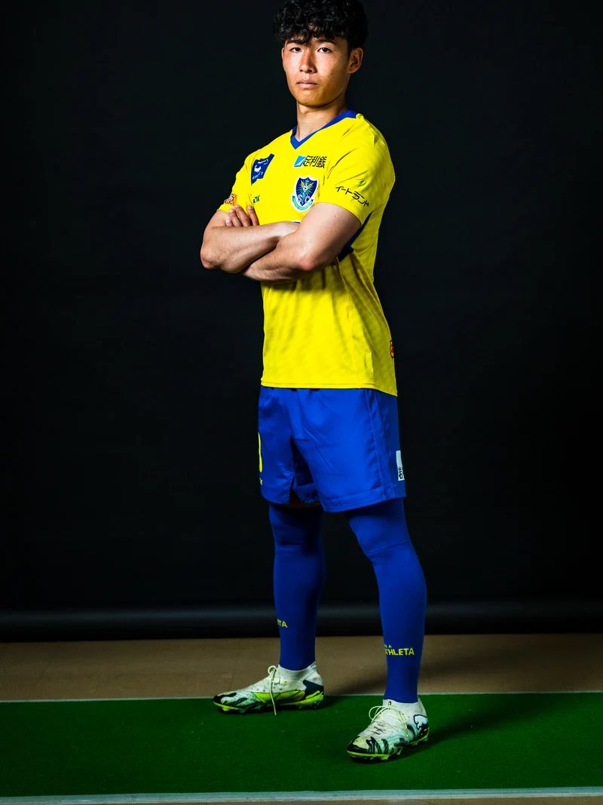
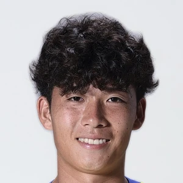

13MFミッドフィールダー
おおそね こうた
大曽根 広汰
OSONE Kota
PROFILEプロフィール
- 生年月日
- 1999.08.17
- 出身
- 東京都
- 身長
- 167cm
- 体重
- 64kg
- 利き足
- 右
- 利き手
- 右
- 前所属
- 藤枝ＭＹＦＣ
- 在籍
- 1年目

Q&AABOUT人柄・好きなもの
Q. ニックネームは？
ソネ
Q. 背番号のこだわりは？
小さい頃からつけていた番号
Q. 大切にしている言葉、座右の銘は？
継続
Q. 趣味・マイブームは？
ガチャガチャ探し
Q. 好きなアニメ・マンガは？
ONE PIECE
Q. 好きな芸能人・アーティストは？
ラランド
Q. 実は私、〇〇なんです
なで肩
Q. ここだけはチームNo.1
なで肩
Q. ホッとする瞬間はどんなとき？
家に帰ったとき
Q. 自分へのご褒美は？
チーズケーキ
DAILYふだんのこと
Q. 遠征に必ず持っていくものは？
イヤホン
FOOTBALLサッカーのこと
Q. 子どもの頃のポジションは？
FW
Q. 子どもの頃はどんな選手だった？
イケイケどんどん
Q. アピールポイントは？
献身性
Q. 今シーズンの目標は？
昇格に貢献
MESSAGEサポーターの皆さんへ
共に闘いましょう